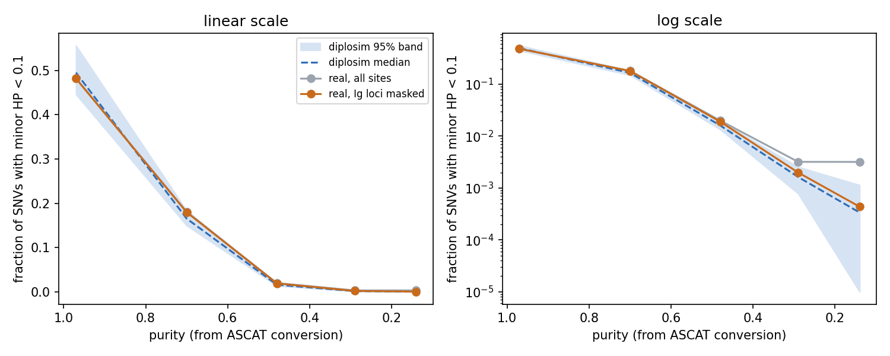
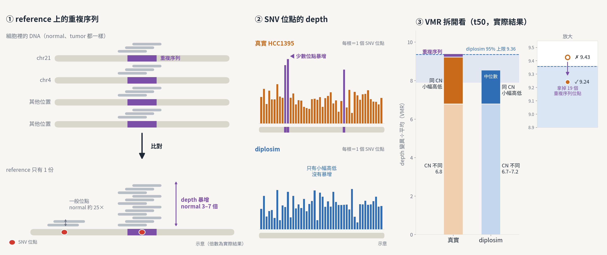

使用者要讓聽眾先知道 CONIPHER 原本有哪些參數、各自影響哪一欄輸出，再說明 diplosim 為什麼要多加旋鈕。原本的報告直接從「8 個新旋鈕」開始，中間缺了這兩段。
依線上簡報的留言逐頁處理。第 3 頁加 CONIPHER 參數頁：只放和 ref、alt、VAF、copy number 有關的 6 個參數，用貫穿全冊的 SNV1 例子（seed 1）把參數一路算到輸出。第 9 頁加 depth 旋鈕頁，實際用 --depth-dispersion 0.03 跑一次 diplosim 取得 SNV1 的輸出。第 5 頁加前提說明頁：先看 HCC1395 真實現象，再加新旋鈕，最後確認模擬也出現同樣現象。第 2 頁大綱圖補上 diplosim 虛線。每加一頁就改全冊頁碼與大綱頁的頁碼引用。
簡報從 12 頁變成 15 頁，check_slides.py 結果是 15 頁、0 個錯誤。CONIPHER 參數頁以 SNV1 為例：期望 VAF 0.45 = 0.9 × 1 ÷ 2，depth 57 條 read 中 alt 21、ref 36，觀察 VAF 0.37。depth 旋鈕頁的證據是：copy number 相同時，真實 depth 的變異是 Poisson 的 1.8–3.1 倍。前提說明頁用一張 5 列的對照表，把 p6–p10 每頁的「HCC1395 現象 → 新參數」排在一起。
報告前半段現在照這個順序講：CONIPHER 有什麼 → 真實資料看到什麼 → 所以 diplosim 加了哪個旋鈕。聽眾能從前提頁一眼看出每個旋鈕對應哪一個真實現象。
三頁都沒有渲染成縮圖檢查，文字與箭頭位置是手算的，要使用者自己打開看。本地有 8 頁（k-allele、k-tag、k-error、k-cn、t1-knobs、t2-stats、r-targets、u-known）和線上版內容不同，這次只同步頁碼。c-params、k-depth、k-premise 的講稿約 300–360 字，超過 S-2 建議的 120–250 字。這些改動都還沒 commit。編輯器裡的 Claude 和 CLI session 同時處理同一則留言，depth 頁有一版被覆蓋。
session d704e45a 11-03 15:01–15:49。 15:01 使用者要求 → 15:07 c-params 上線（13 頁） 15:22 留言 → 15:27 c-params 中間改成 4 張示意圖，保留編輯器加的 57 條 read 堆疊 15:29 留言 → 15:32 k-depth 上線（14 頁），覆蓋編輯器版本（舊版用全部 SNV 的 VMR 9.41 當證據，不對） 15:37 留言 → outline 圖例改「diplosim：接近真實」 15:45 使用者要求 → 15:49 k-premise 上線（15 頁）
report/2026_11_04_slides/project/slides/c-params.htmlreport/2026_11_04_slides/project/slides/k-depth.htmlreport/2026_11_04_slides/project/slides/k-premise.htmlreport/2026_11_04_slides/project/slides/outline.htmlreport/2026_11_04_slides/project/slides/m-axis.htmlreport/2026_11_04_slides/project/slides/t1-knobs.htmlreport/2026_11_04_slides/project/deck.jsonreport/2026_11_04_slides/BRIEF.mdreport/2026_11_04_slides/data/diplosim_seed1_depthdisp003/diplosim/target/release/diplosim --seed 1 --depth-dispersion 0.03python3 tools/check_slides.py report/2026_11_04_slides/ --titleshttps://claude.ai/artifact/2NCt1kGAEfbCKGcVxeXb8C11-02 結果頁上，LOH 比例只有 2/5 個 purity 落在 diplosim 區間內，purity 越低越偏。使用者懷疑 diplosim 在低 purity 下還模擬不好 LOH。
先看 purity 0.14 那 22 個真實 LOH 位點落在哪裡，再量 normal（HCC1395BL）在那一段的 depth。找到原因後列 3 個方案，使用者選方案 1：在真實端排除三個抗體基因區（IGH、IGK、IGL），diplosim 端不重跑。新寫 tools/diplosim_ppc_mask_real.py 只重算真實端數值；先確認不排除任何區時，輸出和原本的表逐行相同。再改 gen_p11.py 重產第 14 頁。
22 個位點中 19 個集中在 chr22:22.816–22.829 Mb，位在 IGL 內。normal 在這段 depth 只有 31×，兩側約 52–62×，少了一半。每個 purity 排除 81–114 個 SNV 後，LOH 比例 5 個 purity 都在區間內。其他 5 項統計的判定都沒變。第 14 頁標題改成「6 個數值中 5 個在 5 個 purity 都落在模擬區間內，depth 高低程度只在 purity 0.97 略偏」。
| purity | 真實（全部） | 真實（排除 IGL） | 模擬 95% 區間 | 結果 |
|---|---|---|---|---|
| 0.97（t50） | 0.4822 | 0.4819 | 0.446–0.556 | 在區間內 |
| 0.70（t40） | 0.1806 | 0.1799 | 0.150–0.184 | 在區間內 |
| 0.48（t30） | 0.0199 | 0.0189 | 0.0134–0.0193 | 在區間內（接近上限） |
| 0.29（t20） | 0.0032 | 0.0020 | 0.0008–0.0026 | 在區間內 |
| 0.14（t10） | 0.0032 | 0.0004 | 0–0.0011 | 在區間內 |

這推翻了 11-02 的「LOH 比例在低 purity 略偏」。diplosim 模擬 LOH 沒有問題，差距來自 normal 本身：它是 B 細胞株，抗體基因區少一條 HP，混進再多 normal 也補不回來。diplosim 的 normal 處處都有兩條 HP，所以不會出現這種位點。三區是依細胞種類事先決定排除的，不是看結果調的。
「B 細胞的 V(D)J 重組刪掉一條 allele」是推論：只量了 normal 的 depth，沒看 read 的斷點。purity 0.14 另有 3 個低 minor HP 位點不在 IGL（chr22:23.42 Mb 2 個、chr7:153.7 Mb 1 個），可能是高倍 amplification，沒追。purity 0.14 的 alt_on_minorHP 仍在區間外（真實 0.186，模擬 0.158–0.173），這次沒處理。第 14 頁講稿最後一句寫了 lab_report 路徑，違反「講稿不放路徑」，沒改。
session ea8a3a63 11-03 16:14–16:28。 排除區：chr22:22,026,076–22,922,913（IGL）、chr14 IGH、chr2 IGK 排除後小變動：t10 called SNV 7,260 → 7,179；unphased 比例 0.134 → 0.130 t2-stats、k-cn 引用的 48.2% 排除後仍是 0.4818 commit 1208b27（22 檔）；BRIEF.md 只放 R5 來源列與 p14 段落，其他 session 的段落未 commit；13 個 daily HTML 刪除仍在暫存區
tools/diplosim_ppc_mask_real.pytools/plot_mask_ig_loh.pyreport/2026_11_04_slides/gen_p11.pyreport/2026_11_04_slides/project/slides/r-targets.htmlreport/2026_11_04_slides/BRIEF.mdsamtools coverage（HCC1395BL，chr22 IGL 與兩側）lab_report/2026-11-03_diplosim_mask_ig_loci/commit 1208b27LOH 解決後，第 14 頁只剩一項沒對上：purity 0.97 時，真實的 depth 變異÷平均（VMR）是 9.43，超過 diplosim 95% 區間上限 9.36。要知道是 diplosim 的 CN 模擬得不好，還是別的原因。
把真實 VMR 拆成兩部分：不同 CN 造成的 depth 差異，以及相同 CN 下各位點的 depth 高低。真實 CN 用 ASCAT。diplosim 端用 PPC 的固定旋鈕、--depth-dispersion 幾乎 0，重跑 8 個 seed 看 CN 部分。再查 depth 最高的位點在哪裡、在 normal 是否也高。最後照使用者要求畫成一張基因風格的圖。
CN 造成的部分：真實 6.82，diplosim 6.7–7.2，兩邊對得上。相同 CN 下的部分：真實約 2.6，diplosim 約 1.3–2.4，差距在這裡。depth 最高的位點集中在 chr21 中心粒附近（8.99、10.35、10.46 Mb）和 chr4 端粒附近（190.1 Mb），在 normal 也有 285–348×，約全基因體的 6 倍。
| 拿掉的位點（依 normal depth 判斷） | 位點數 | 真實 VMR | 判定 |
|---|---|---|---|
| 不拿掉 | 0 | 9.43 | 區間外 |
| normal ≥ 中位數 3 倍 | 19 | 9.24 | 在區間內 |
| normal ≥ 中位數 2 倍 | 72 | 9.10 | 在區間內 |

差距是比對造成的：細胞裡多份相同的重複序列，在 reference 上只有一份，read 全疊到同一處。這不是腫瘤的 CN，diplosim 對每個位點一視同仁，產生不出這種長尾。差距只有 0.07（約 0.7%），在「差距小於約 0.1 不必細調」的原則內。
下一步 3 個方案使用者還沒選：只補說明（建議）、真實端再排除 19 個重複區位點、把 --depth-dispersion 上限從 0.025 調到 0.03。這張圖要不要放進第 14 頁也未定。8 個 seed 只用來看 CN 分布，不是正式的 200 次 PPC。ASCAT 的 CN 本身也有誤差，可能讓「相同 CN 下的部分」看起來偏大，這是推論。檔案都沒 commit。
session ea8a3a63 11-03 16:30–17:23。 真實資料改用 2026-11-01_diplosim_phi_from_normal 量好的 normal（t00_n25）depth，停掉背景量測 diplosim CN ≥ 5 的位點約 10%，最高 CN 9–10；真實 15.7%，最高 9 --depth-dispersion 和 VMR 的相關係數 0.77（diplosim/src/sequencing.rs:154）
tools/plot_vmr_repeat_cause.pylab_report/2026-11-03_diplosim_vmr_t50_repeats/README.mdlab_report/2026-11-03_diplosim_vmr_t50_repeats/vmr_cause.pnglab_report/2026-11-03_diplosim_vmr_t50_repeats/tables/sim_cn_part.tsv15:29 的 depth 頁留言，兩邊各做了一版；CLI 版判定編輯器版用錯證據（全部 SNV 的 VMR 9.41 大多來自 CN 差異），覆蓋掉它。15:37 的大綱圖留言則是保留編輯器版再補改。
為什麼：11-02 清 /bip8_disk 時，在背景把 longphase-s-boyu 的 old tagging BAM 轉成 CRAM，11-03 早上確認是否完成。做了什麼：在 .worktrees/longphase-s-origin-new-split/output/hcc1395_old_tagging_rerun/ 檢查 hcc1395_old_tagging.cram（168 GB，11-02 16:44 寫完，.crai 16:49 建好），samtools quickcheck 通過。抽 3 個區域 read 數完全一樣（chr1:10.0–10.2M 2,436 條、chr16:34.55–34.85M 46,742 條、chrX:50.0–50.1M 441 條），chr1 一段逐條比對 193 條，SAM 前 11 欄與 HP、PS、PQ、MM、ML 都相同。差異：RG:Z 全部遺失（原 BAM header 沒有 @RG 行，推論 CRAM 因此丟掉），另多了 samtools 自動算的 MD:Z。結果：BAM 292 GB 是 CRAM 的 1.74 倍。HP/PS 計數、SNV 共現、PhyClone 輸入都不讀 RG，使用者決定刪 BAM。刪除前用 lsof 確認沒有程式在讀，刪掉 BAM 與 .bai 後 /bip8_disk 剩 3.1 TB。狀態：data_input.md 第 22 行改成 .cram，註明讀取要加 -T GRCh38_no_alt_analysis_set.fasta、原 BAM 已刪、RG:Z 已遺失；這個改動未 commit。之後無法再按 sequencing run 或 flowcell 分組。
data_input.mdsamtools quickcheck -v hcc1395_old_tagging.cramlsof hcc1395_old_tagging.bam為什麼：使用者看第 14 頁的「diplosim 中位數、95% 區間」時，agent 說每次模擬有「6 個參數」重抽，和第 4 頁寫的「新增 8 個旋鈕」對不起來。做了什麼：比對 diplosim/src/params.rs 與 CONIPHER tx_simulation（simulate.py:13-46）以及 tools/diplosim_knob_ranges_hcc1395.tsv。結果：diplosim 新增的參數確實是 8 個（--depth-dispersion、--prop-pos-second-cna、--base-error、--mistag-rate、--mistag-concentration、--prop-tagged、--tag-concentration、--prop-snv-on-b），第 4 頁正確。「6 個」出自 lab_report/2026-11-01_diplosim_detection_curve/README.md:42，是 PPC 每次重抽的旋鈕數，其中 4 個是新旋鈕、2 個是 CONIPHER 原有的 --prop-pos-lost、--prop-truncal-snvs；另外 4 個新旋鈕在 PPC 固定。PPC 實際每次變動的有 10 個（再加腳本用的 normal_tumour_fraction、normal_base_error、detection_curve_position 與 n_clones 2–8）。過程中 agent 先說「6 個」、再說「10 個」，第三輪才講清楚。狀態：README:42 的寫法與 params.rs:1 的註解（仍寫 seven）都還沒改，agent 問要不要改，使用者沒回。
diplosim/src/params.rstools/diplosim_knob_ranges_hcc1395.tsvlab_report/2026-11-01_diplosim_detection_curve/README.md為什麼：11-02 23:00 cron 跑 daily-log。做了什麼：掃 10-31 23:00 到 11-02 23:00，寫 daily/.data/2026-11-02.json（呈現 5 項、記錄 3 項），過 validate、verify_evidence、render，推進游標到 11-02 23:00。結果：daily/2026-11-02.html 產出。回報提到三件事：11-01 那次 daily-log 因額度用完沒產 HTML 也沒推進游標，所以這次從 10-31 23:00 起掃；第 3 項標題的可讀性提醒判為誤判放行；首頁 index.html 指向已刪除單日 HTML 的連結可能失效。狀態：日誌 repo 未 commit、未 push。
daily/.data/2026-11-02.jsondaily/2026-11-02.html